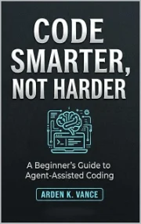

The Vance Report
Arden K. Vance.
Practical guides to putting AI to work without a programming background, and a daily stock screen that reports its own test results — including the ones that went against it.
Arden K. Vance writes short, practical guides for people who want AI to do real work but don’t have — and don’t want — a programming background. Each book in the No-Code AI Workforce Series takes one job and walks through doing it with tools available today, favouring free or low-cost software and plain language over jargon.
The investing side of that work runs on this site. The Vance Report ranks every eligible US company each day on cheapness, quality, safety and confirmation, using the companies’ own SEC filings. The rules for each screen are written down before they are tested, and results are reported whether or not they flatter the screen.
The books
- 09-13-2026 The No-Code AI Agent for the Value Investor Setting up AI research assistants, built on models such as Google Gemini, to scan for value candidates, run the balance-sheet arithmetic and write plain summaries — without writing code. See the note below before using its screening rule.
- 09-02-2026 The No-Code AI Video Starter Kit From an idea on Saturday morning to an exported video by Sunday: a weekend workflow for scripting, generating and assembling video with AI tools, written for complete beginners.
-

05-02-2026 Code Smarter, Not Harder A beginner’s guide to agent-assisted coding: directing AI tools to design apps and automate workflows, with the tools handling the syntax while you handle the decisions. - 01-05-2026 Mastering AI Agents, Second Edition Building and deploying autonomous AI agents across a business: a phased roadmap from scoping to deployment, low-cost toolkits, and benchmarks for telling whether the automation is paying for itself.
Elsewhere
On this site: today’s screen and field notes.